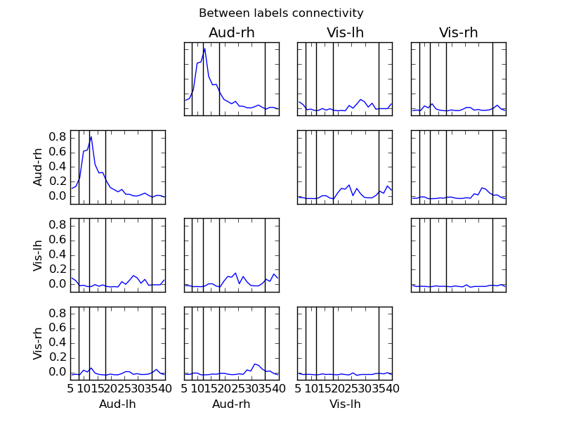

Compute full spectrum source space connectivity between labels¶
The connectivity is computed between 4 labels across the spectrum between 5 and 40 Hz.
Script output:
Reading inverse operator decomposition from /data1/agramfort/work/src/mne-python/examples/MNE-sample-data/MEG/sample/sample_audvis-meg-oct-6-meg-inv.fif...
Reading inverse operator info...
[done]
Reading inverse operator decomposition...
[done]
305 x 305 full covariance (kind = 1) found.
Read a total of 4 projection items:
PCA-v1 (1 x 102) active
PCA-v2 (1 x 102) active
PCA-v3 (1 x 102) active
Average EEG reference (1 x 60) active
Noise covariance matrix read.
22494 x 22494 diagonal covariance (kind = 2) found.
Source covariance matrix read.
22494 x 22494 diagonal covariance (kind = 6) found.
Orientation priors read.
22494 x 22494 diagonal covariance (kind = 5) found.
Depth priors read.
Did not find the desired covariance matrix (kind = 3)
Reading a source space...
...
Python source code: plot_mne_inverse_connectivity_spectrum.py
# Authors: Alexandre Gramfort <alexandre.gramfort@telecom-paristech.fr>
#
# License: BSD (3-clause)
import matplotlib.pyplot as plt
import mne
from mne.datasets import sample
from mne.io import Raw
from mne.minimum_norm import apply_inverse_epochs, read_inverse_operator
from mne.connectivity import spectral_connectivity
print(__doc__)
data_path = sample.data_path()
subjects_dir = data_path + '/subjects'
fname_inv = data_path + '/MEG/sample/sample_audvis-meg-oct-6-meg-inv.fif'
fname_raw = data_path + '/MEG/sample/sample_audvis_filt-0-40_raw.fif'
fname_event = data_path + '/MEG/sample/sample_audvis_filt-0-40_raw-eve.fif'
# Load data
inverse_operator = read_inverse_operator(fname_inv)
raw = Raw(fname_raw)
events = mne.read_events(fname_event)
# Add a bad channel
raw.info['bads'] += ['MEG 2443']
# Pick MEG channels
picks = mne.pick_types(raw.info, meg=True, eeg=False, stim=False, eog=True,
exclude='bads')
# Define epochs for left-auditory condition
event_id, tmin, tmax = 1, -0.2, 0.5
epochs = mne.Epochs(raw, events, event_id, tmin, tmax, picks=picks,
baseline=(None, 0), reject=dict(mag=4e-12, grad=4000e-13,
eog=150e-6))
# Compute inverse solution and for each epoch. By using "return_generator=True"
# stcs will be a generator object instead of a list.
snr = 1.0 # use lower SNR for single epochs
lambda2 = 1.0 / snr ** 2
method = "dSPM" # use dSPM method (could also be MNE or sLORETA)
stcs = apply_inverse_epochs(epochs, inverse_operator, lambda2, method,
pick_ori="normal", return_generator=True)
# Read some labels
names = ['Aud-lh', 'Aud-rh', 'Vis-lh', 'Vis-rh']
labels = [mne.read_label(data_path + '/MEG/sample/labels/%s.label' % name)
for name in names]
# Average the source estimates within each label using sign-flips to reduce
# signal cancellations, also here we return a generator
src = inverse_operator['src']
label_ts = mne.extract_label_time_course(stcs, labels, src, mode='mean_flip',
return_generator=True)
fmin, fmax = 5., 40.
sfreq = raw.info['sfreq'] # the sampling frequency
con, freqs, times, n_epochs, n_tapers = spectral_connectivity(
label_ts, method='wpli2_debiased', mode='multitaper', sfreq=sfreq,
fmin=fmin, fmax=fmax, mt_adaptive=True, n_jobs=2)
n_rows, n_cols = con.shape[:2]
fig, axes = plt.subplots(n_rows, n_cols, sharex=True, sharey=True)
plt.suptitle('Between labels connectivity')
for i in range(n_rows):
for j in range(i + 1):
if i == j:
axes[i, j].set_axis_off()
continue
axes[i, j].plot(freqs, con[i, j, :])
axes[j, i].plot(freqs, con[i, j, :])
if j == 0:
axes[i, j].set_ylabel(names[i])
axes[0, i].set_title(names[i])
if i == (n_rows - 1):
axes[i, j].set_xlabel(names[j])
axes[i, j].set_xlim([fmin, fmax])
axes[j, i].set_xlim([fmin, fmax])
# Show band limits
for f in [8, 12, 18, 35]:
axes[i, j].axvline(f, color='k')
axes[j, i].axvline(f, color='k')
plt.show()
Total running time of the example: 19 seconds